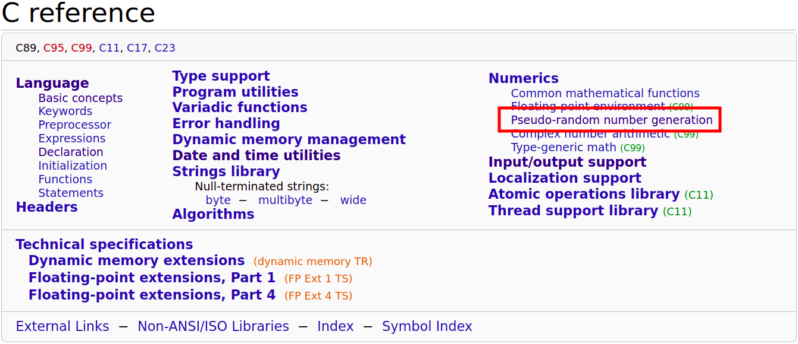
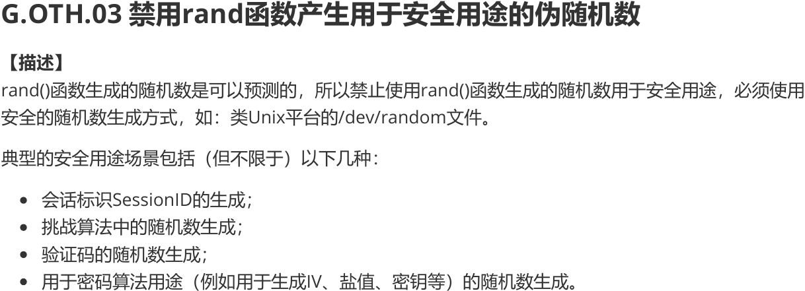
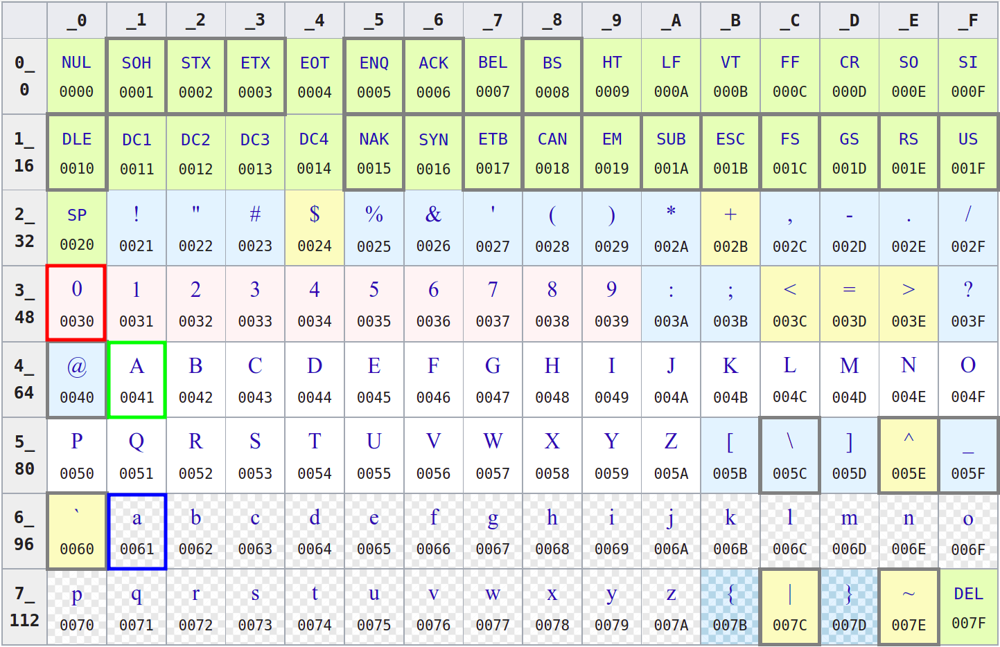

Introducing C
Hengfeng Wei (魏恒峰)
hfwei@nju.edu.cn

Sep. 27, 2021
Questionnaire

$75\%$ of students are new to programming.
To C Beginners

From Beginners to Masters
Programming
De-programming
What is C?
C is a computer programming language (PL).
You communicate your ideas to computers via PLs.
What is C?
Programming is NOT (only) about languages.
Programming is not about C.
You learn C to express YOUR IDEAS.
How to Learn (1)?

How to Learn (2)?
"无他, 但手熟尔"
How to Learn (3)?

How many bugs have you ever produced?
C Programming:
A Modern Approach

C Primer Plus


K&R C Bible


K&R
Brian W. Kernighan (1942 ~)
Dennis M. Ritchie (1941 ~ 2011)
Examination and Scores
-
考勤 -
期中测试 -
期末笔试 - 期末机试 (30 分)
- 编程练习 (70 分)
- 奖励
编程练习: 每周基础训练 (40 分) + 学期项目 (30 分; 2 个)
Q&A


CLion

"你有你的选择, 而我选择 CLion"
Hello World (K&R C)

Hello World (Standard C)
Brief History of C

You do not have to become a language lawyer.
Brief History of C

Turing Award (1983)
Game: Guess the Number

Game: Guess the Number
You think. I will type it for you.
How to Obtain a Random Number?

How to Obtain a Random Number?

How to Obtain a Random Number?
$s \qquad f(s) \qquad f(f(s)) \qquad \ldots$
pseudo-random number sequence
How to Obtain a Random Number?

Code Style
Braces
Tabs vs. Spaces
Programming Style Guide

Secure C


How to Obtain a Random Number (Revisited)?

What is Next?
- Variables and Types (
int,double) - Math: computer arithmetic
- Input/Ouput (I/O)
- Branching: "if/else", "switch/case"
- Looping: "while", "do/while", "for"
- Jumps: "break", "continue", "goto"
- Functions & Libraries
Keeping Programming

No Plagiarism!!!

前两次各扣 10 分, 第三次总分降为 60 分 $\;(\times\; 60\%)$
Resources

6735 99232 2021-C-PL
Resources
发布课件、资料、调查问卷等
Resources


Variables, Types, IO
Hengfeng Wei
hfwei@nju.edu.cn

Oct. 11, 2021
Overview
Variables (变量) Constants (常量)
Data Types (数据类型)
Operators (运算符) Expressions (表达式)
Assignment Statements (赋值语句)
I/O (Input/Output; 输入输出)
"Talk is Cheap. Show me the Code."
circle.c sphere.c mol.c admin.c
Circle
Given a radius ($10$) of a circle,
to compute its circumference and area.
$L = 2\pi r$ $S = \pi r^2$
- 每个结果各占一行
- 小数点后保留两位
Declaration (声明)
int radius = 10;
- Introduce a variable called
radius. - You can use
radiuslater. - The type of
radiusisint(integer). radiusis initialized (初始化) to10.- You can assign (赋值) other values to
radius. radiusrefers to a location (&radius) in memory.
Definition (定义)
int radius = 10; is also a definition.
Any definitions are declarations.
All declarations are definitions (at least for now).
Identifiers (标识符)
int radius = 10;
The name radius is an identifier.
- made up of letters, numbers, and underscores
- do not start with a number
Identifiers
- Use meaningful identifiers
surface_areavs.surfaceArea
Operators and Expressions
double circumference = 2 * PI * radius;
Assignment Statements
double circumference = 0;
circumference = 2 * PI * radius;
Sphere
Given a radius ($100$) of a sphere,
to compute its surface area and volume.
$A = 4 \pi r^2$ $V = \frac{4}{3} \pi r^3$
- 每个结果各占一行
- 小数点后保留四位
- 每个结果至少占$15$字符, 左对齐
_______________ : surface_area_______________ : volume
mol
$6$ 克氧气的物质的量是多少?
$Q = 6 / 32 \times 6.02 \times 10^{23}$
两种格式输出, 结果均使用科学计数法表示
- 第一行结果, 小数点后保留三位
- 第二行结果, 保留五位有效数字
Data Types
int($\approx \mathbb{Z}$)double($\approx \mathbb{R}$)char(Character; 字符)C string(char array; 字符数组)
int $\approx \mathbb{Z}$
INT_MIN INT_MAX
printf("INT_MIN = %d \t INT_MAX = %d\n", INT_MIN, INT_MAX);
A (Naive) Administration System
- Name (EN)
- Gender (F/M)
- Birthday (mm-dd-yyyy)
- Weekday (Xyz.)
- C
- Music
- Medicine
- Mean (.d)
- Standard Deviation (.dd)
- Ranking ($\%$)
A (Naive) Administration System
- 每组信息占一行
- 各项信息使用 "TAB" 间隔
- 各项信息要遵循特定格式要求
罗大佑

Data Types: char

isdigit isalpha isalnumislower isupper tolower toupperisspace(including, \n, \t)
Data Types: C string
char first_name[] = "Tayu";
A C string is an array of characters.
'\0': terminating null character
'T', 'a', 'y', 'u', '\0'
char first_name[5] = "Tayu";
char first_name[10] = "Tayu";
char first_name[2] = "Tayu";
printf
int printf(const char *format, ...);format: format string (格式串)...: variable argument list (可变长参数列表)
printf
int printf(const char *format, ...);The format string consists of
- ordinary characters (not %)
- conversion specifications (转换说明)
- each of which is introduced by %
printf
int printf(const char *format, ...);
Escape sequence (转义序列)
\n: Newline\t: Horizontal Tab\": Double quotation mark\': Single quotation mark\\: Backslash\b: Backspace
printf
int printf(const char *format, ...);| %specifier | Argument | Output |
|---|---|---|
| %d (%i) | int | decimal ([-]dddd) |
| %f | double | decimal ([-]ddd.ddd) |
| %e (%E) | double | decimal ([-]d.ddde[+-]dd) |
| %g (%G) | double | %f or %e |
printf
int printf(const char *format, ...);| %specifier | Argument | Output |
|---|---|---|
| %c | int | character |
| %s | pointer to a char array | string |
| %% | % |
printf
"It is up to you to ensure that
the type of the actual argument
matches the type expected by conversion specifiers."
printf
%[flags][width][.precision]specifier
int printf(const char *format, ...);flags-: left-justified (otherwise, right-justified)+: always begin with a plus or minus sign
printf
%[flags][width][.precision]specifier
int printf(const char *format, ...);width- minimum field width
- padded with spaces if it has fewer characters
printf
%[flags][width][.precision]specifier
int printf(const char *format, ...);- %d, %i: minimum number of digits
- expanded with leading zeros when needed
- %f, %e, %E: number of digits after '.'
- default is $6$
- %g, %G: maximum number of significant digits
- %s: maximum number of characters
printf
int scanf(const char *format, ...);format: format string (格式串)...: variable argument list (可变长参数列表)
scanf("%d%d", &c_score, &music_score);
scanf
int scanf(const char *format, ...);The format string consists of
- white-space characters
- ordinary characters
- neither % nor white-spaces
- conversion specifications
- each of which is introduced by %
scanf
int scanf(const char *format, ...);- Scan the input stream from left to right
- Identify expected items as long as possible
scanf
int scanf(const char *format, ...);| %specifier | Matched Item | Argument |
|---|---|---|
| %d | skip white-spaces; matches an int |
pointer to int |
| %e, %f, %g | skip white-spaces; matches a double |
pointer to double |
| %s | a sequence of non-white-spaces | pointer to a char array |
scanf
int scanf(const char *format, ...);| %specifier | Matched Item | Argument |
|---|---|---|
| %c | a character | pointer to a char |
| %[abc] %[^abc] | (a|b|c)* |
pointer to a char array |
| %[^abc] | pointer to a char array |
|
| %% | % |
scanf
%[$\star$][width]specifier
int scanf(const char *format, ...);- $\star$: assignment-suppressing
- width: maximum field width
scanf
"It is up to you to ensure that
the type of each actual argument pointer
matches the type expected by conversion specifiers."
References
printf @ cppreference
scanf @ cppreference
References
Do not use scanf.
Use $\dots$ instead.